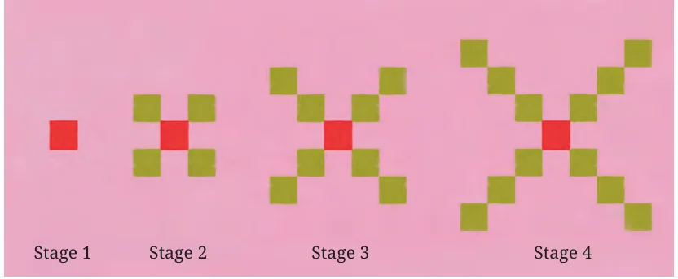
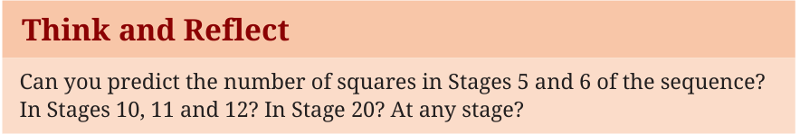
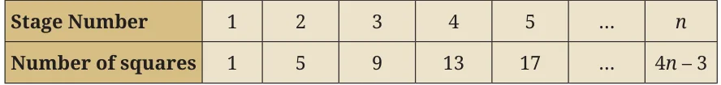
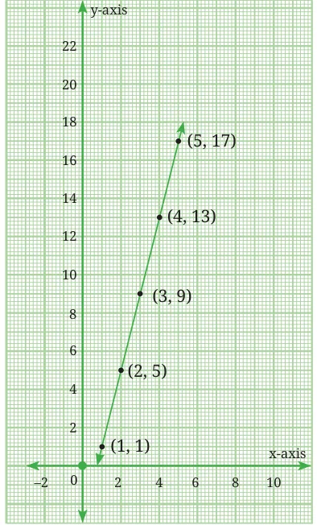

So far we have learnt that a sequence is an ordered list of numbers that may follow a particular rule. However, there may be sequences, such as the sequence of prime numbers, where there is no clear regularity in the rule. In this section, we explore a special kind of sequence called an arithmetic progression. Let us look at the growing pattern of squares given in Fig. 8.3. The first four stages of the pattern are shown.

If we count the number of tiny squares at each stage, we get sequence 1, 5, 9, 13.

We observe that at each stage, 4 squares get added to the corners of the pattern in the earlier stage. The number of squares at successive stages can be written as
1, \(1 + 4\), \(1 + 4 + 4\), \(1 + 4 + 4 + 4\), …
This may be rewritten as
1, \(1 + 1 \times 4\), \(1 + 2 \times 4\), \(1 + 3 \times 4\), …
If we treat these expressions as the terms of a sequence, we get
\(t_{1} = 1\), \(t_{2} = 1 + 1 \times 4\), \(t_{3} = 1 + 2 \times 4\), \(t_{4}= 1 + 3 \times 4\)
and so on. We may therefore write the \(n^{th}\) term as \(t_{n}= 1 +\) (n \(- 1) \times 4\), which simplifies to \(t_{n}= 4n - 3\). The first six terms of the sequence representing the number of squares in Fig. 8.3 are 1, 5, 9, 13, 17, 21. We note that the difference between successive terms is the constant value 4. Such sequences, in which the difference between consecutive terms is constant, are known as arithmetic progressions. We will refer to them as APs.
Think and Reflect
Consider all the sequences we have discussed so far in this chapter. Which ones are arithmetic progressions and which ones are not? Can you justify your claim?
Note that in the \(n^{th}\) term \(t_{n}= 1 +\) (n \(- 1) \times 4\) of the sequence above, 1 is the first term of the sequence and 4 is the ‘common difference’. Similarly, the \(n^{th}\) term of the sequence 1, 4, 7, 10, … is \(t_{n}= 1+\) (n \(- 1) \times 3\), where 1 is the first term and 3 is the common difference. In the sequence 11, 7, 3, \(- 1\), \(- 5\), … the numbers decrease by 4. This is also an arithmetic progression, where the first term is 11 and the common difference is \(- 4\). In general, an arithmetic progression (AP) can be described as
a, \(a + d\), \(a + 2d\), \(a + 3d\), …, \(a +\) (n \(- 1) \times d\),
where ‘a’ is the first term and ‘d’ is the common difference. Thus \(t_{n} = a +\) (n \(- 1) \times d\) is an expression for the \(n^{th}\) term of any arithmetic progression, for some fixed values of a and d.
8.4.1 Visualising an AP
Let us return to the growing pattern of squares in Fig. 8.3 and prepare a table that shows the number of tiny squares at each stage.

Let us form a pair of numbers (x, y) using the information in the table above where x represents the stage number and y the corresponding number of squares. When we plot the ordered pairs emerging from the table, that is, (1, 1), (2, 5), (3, 9), (4, 13), (5, 17), we observe that they lie on a straight line! This is shown in Fig. 8.4.

Exercise: Verify that the following sequences are arithmetic
progressions and write their n terms. What do you observe when you plot the ordered pairs emerging from them?
th
- (i)2, 5, 8, 11, … (ii) \(- 5\), \(- 1\), 3, 7, …
Exercise: Using the formula \(t_{n} = a +\) (n \(- 1) \times d\), find the \(n^{th}\) term of the following arithmetic progressions.
- (i)\(\frac{1}{2}\) , \(\frac{5}{2}\) , \(\frac{9}{2}\) , \(\frac{13}{2}\) , … (ii) 1.5, 3.5, 5.5, 7.5, …
Note that \(t_{n} = a +\) (n \(- 1) \times d\) is the explicit rule for finding the \(n^{th}\)
term of an AP. Can we also find the recursive rule? Yes. It is \(t_{1} = a\),
\(t_{n} =\) tn \(- 1 + d\) for \(n \ge 2\).
Consider once again the AP: 1, 5, 9, 13, 17, … Since every term is 4 more than the previous term, another way of writing this sequence is \(t_{1} = 1\), \(t_{n} = t_{n} - 1 + 4\) for \(n \ge 2\). Verify for yourself that this recursive rule leads to the terms of the sequence. Exercise: Find recursive rules for the APs in the previous exercises. Example 5: A person books a taxi to travel in the city. The taxi company charges a fixed booking fee of `200 plus `40 per kilometre travelled. Let us write the sequence representing the total fare after travelling 1 km, 2 km, 3 km, and so on. If the person travels 10 km, what will be the total fare? Since the fixed amount is `200, after 1 km the fare will be `200 + `40 = `240, after 2 km it will be `200 + `80 = `280 and after 3 km it will be `200 + `120 = `320. The sequence 240, 280, 320, … is an AP with
first term 240 and common difference 40. The n term of the sequence is \(240 +\) (n \(- 1) \times 40 = 240 + 40n - 40 = 200 + 40n\) where n represents the distance travelled in km.